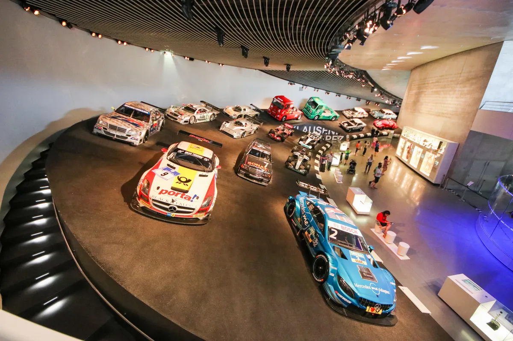

Наименованието на
марката е прието през 1926 година в резултат от сливането на
две конкуриращи се фирми, „Бенц & Сие“ (основана
от Карл Бенц) и „Даймлер Моторен Гезелшфт“ (основана
от Готлиб Даймлер), в общ концерн – Даймлер- Бенц.
Названието на марката е образувано от имената на двата
най-значими автомобила на обедините компании – „Мерцедес“
от 1901 година и Бенц Патент-Моторваген от 1886 година.През
2018 година марката „Мерцедес-Бенц“ е оценявана на
48,601 милиарда щ.д., заемайки второ място (след Тойота)
сред компаниите производители на автомобили и осмо място сред
всички световни марки. По оценка на „БрандЗ“, през
2018 година марката влиза в списъка „Топ 100 най-скъпи
световни марки“, където заема 46-о място сред най-скъпите
марки със стойност 25,684 милиарда щ.д. През 2019 година
марката „Мерцедес-Бенц“ се оценява на 60,355 милиарда
щ.д., заемайки първо място в рейтинга на компаниите
производители на автомобили. През януари 2023 година марката
по оценка на „Бранд Файнанс“ заема второ място сред
автобрандовете, оценява се на 58,8 милиарда щ.д., отстъпвайки
първото място на „Тесла“.

German cars